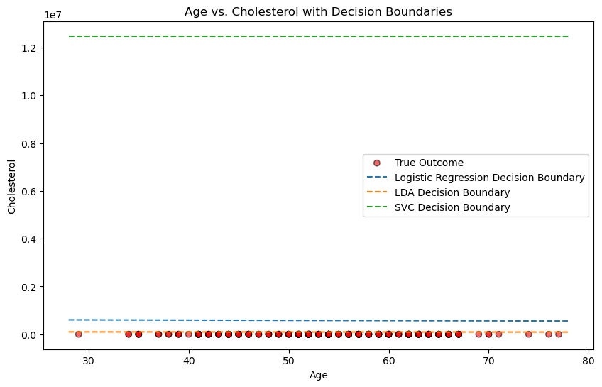

import pandas as pd
ha = pd.read_csv(r"C:\Users\achur\OneDrive\Desktop\School\CP Fall 2024\544\ha_1.csv")The Data
At this link, you will find a dataset containing information about heart disease patients: https://www.dropbox.com/scl/fi/0vrpdnq5asmeulc4gd50y/ha_1.csv?rlkey=ciisalceotl77ffqhqe3kujzv&dl=1
A description of the original dataset can be found here: https://archive.ics.uci.edu/dataset/45/heart+disease (However, this dataset has been cleaned and reduced, and the people have been given fictious names.)
1. Logistic Regression
Fit a Logistic Regression using only age and chol (cholesterol) as predictors.
For a 55 year old, how high would their cholesterol need to be for the doctors to predict heart disease is present?
How high for the doctors to estimate a 90% chance that heart disease is present?
from sklearn.pipeline import Pipeline
from sklearn.neighbors import KNeighborsClassifier
from sklearn.tree import DecisionTreeClassifier
from sklearn.linear_model import LogisticRegression
from sklearn.preprocessing import StandardScaler, OneHotEncoder
from sklearn.model_selection import train_test_split
from sklearn.compose import ColumnTransformer, make_column_selector
import numpy as npfrom sklearn.linear_model import LogisticRegression
from sklearn.pipeline import Pipeline
# missing values
ha['diagnosis'] = ha['diagnosis'].map({'Disease': 0, 'No Disease': 1})
if ha['diagnosis'].isnull().sum() > 0:
print("Found missing values in 'diagnosis' after mapping. Dropping these rows.")
ha = ha.dropna(subset=['diagnosis'])
# variables
X = ha[['age', 'chol']]
y = ha['diagnosis']
# empty values
if X.shape[0] == 0 or y.shape[0] == 0:
print("No valid samples available for fitting. Please check your data.")
else:
log_reg_pipeline = Pipeline([
("logistic_regression", LogisticRegression(penalty="l2", random_state=1))
])
log_reg_pipeline_fitted = log_reg_pipeline.fit(X, y)
# coefficients and intercept
log_reg = log_reg_pipeline.named_steps["logistic_regression"]
intercept = log_reg.intercept_[0]
coef_age, coef_chol = log_reg.coef_[0]
# probabilities
age = 55
log_odds_50 = 0 # log-odds corresponding to a 50% probability
chol_50 = (log_odds_50 - intercept - coef_age * age) / coef_chol
log_odds_90 = np.log(0.9 / (1 - 0.9)) # log-odds corresponding to a 90% probability
chol_90 = (log_odds_90 - intercept - coef_age * age) / coef_chol
# Print results
print(f"Cholesterol level for 50% probability of disease for a 55-year-old: {chol_50:.2f} mg/dL")
print(f"Cholesterol level for 90% probability of disease for a 55-year-old: {chol_90:.2f} mg/dL")Cholesterol level for 50% probability of disease for a 55-year-old: 367.87 mg/dL
Cholesterol level for 90% probability of disease for a 55-year-old: 1587.72 mg/dL
Cholesterol level for 50% probability of disease for a 55-year-old: 367.87 mg/dL
Cholesterol level for 90% probability of disease for a 55-year-old: 1587.72 mg/dL2. Linear Discriminant Analysis
Fit an LDA model using only age and chol (cholesterol) as predictors.
For a 55 year old, how high would their cholesterol need to be for the doctors to predict heart disease is present?
from sklearn.discriminant_analysis import LinearDiscriminantAnalysis
import numpy as np
# variables
X = ha[['age', 'chol']]
y = ha['diagnosis']
# lda model
lda = LinearDiscriminantAnalysis()
lda.fit(X, y)
# lda coefficients
coef_age = lda.coef_[0][0]
coef_chol = lda.coef_[0][1]
intercept = lda.intercept_[0]
# function for prediction
def find_cholesterol_for_lda(age, coef_age, coef_chol, intercept):
chol = -(coef_age * age + intercept) / coef_chol
return chol
# prediction
cholesterol_required = find_cholesterol_for_lda(55, coef_age, coef_chol, intercept)
print(f"Cholesterol level required for a 55-year-old to predict heart disease: {cholesterol_required:.2f} mg/dL")Cholesterol level required for a 55-year-old to predict heart disease: 368.24 mg/dL
Cholesterol level required for a 55-year-old to predict heart disease: 368.24 mg/dL3. Support Vector Classifier
Fit an SVC model using only age and chol as predictors. Don’t forget to tune the regularization parameter.
For a 55 year old, how high would their cholesterol need to be for the doctors to predict heart disease is present?
import warnings
import numpy as np
from sklearn.svm import SVC
from sklearn.model_selection import GridSearchCV
from sklearn.pipeline import Pipeline
from sklearn.preprocessing import StandardScaler
from sklearn.compose import ColumnTransformer
from sklearn.preprocessing import OneHotEncoder
warnings.simplefilter(action='ignore', category=FutureWarning)
# categorical columns
cat = ['sex', 'cp', 'restecg']
ha[cat] = ha[cat].astype('object')
# take care of dummy variable
ha['diagnosis'] = ha['diagnosis'].map({'Disease': 0, 'No Disease': 1})
# missing values
ha['age'] = ha['age'].fillna(ha['age'].median())
ha['chol'] = ha['chol'].fillna(ha['chol'].median())
for col in cat:
if ha[col].isnull().any():
ha[col] = ha[col].fillna(ha[col].mode()[0])
# check columns
for col in cat:
if col not in ha.columns:
raise ValueError(f"Expected column '{col}' not found in the DataFrame.")
# column transformer
ct = ColumnTransformer(
transformers=[
('num', StandardScaler(), ['age', 'chol']),
('cat', OneHotEncoder(handle_unknown='ignore'), cat)
],
remainder='passthrough'
)
# variables
X = ha[['age', 'chol', 'sex', 'cp', 'restecg']]
y = ha['diagnosis']
# data consistency
print(f"Shape of X: {X.shape}")
print(f"Shape of y: {y.shape}")
print("Data types:\n", X.dtypes)
# svc pipeline
pipeline_svc = Pipeline([
("preprocessing", ct),
("svc", SVC(kernel="linear", probability=True))
])
# hyperparameter tuning
params = {
'svc__C': [0.001, 0.01, 0.1, 1, 10],
}
# grid search
try:
grid_search = GridSearchCV(pipeline_svc, params, cv=5, scoring='accuracy')
grid_search.fit(X, y)
except ValueError as e:
print(f"Error during model fitting: {e}")
# best estimator
if 'grid_search' in locals() and hasattr(grid_search, 'best_estimator_'):
svc_model = grid_search.best_estimator_.named_steps['svc']
# scaler
scaler = grid_search.best_estimator_.named_steps['preprocessing'].named_transformers_['num']
means = scaler.mean_
stds = scaler.scale_
# check indices
numeric_indices = [0, 1]
stds = stds[numeric_indices]
# coefficients and intercept for the original scale
scaled_coefficients = svc_model.coef_[0]
scaled_intercept = svc_model.intercept_[0]
coefficients = scaled_coefficients / stds
intercept = scaled_intercept - np.sum(means[numeric_indices] * scaled_coefficients / stds)
# logistic regression equation
equation = f"logit(P(Disease)) = {intercept:.3f}"
for coef, feature in zip(coefficients, ['age', 'chol']):
equation += f" + {coef:.3f}*{feature}"
print(equation)
# prediction
logit = np.log(0.5 / (1 - 0.5))
cholesterol_required = (logit - intercept - coefficients[0] * 55) / coefficients[1]
print(f"Cholesterol level required for a 55-year-old to predict disease: {cholesterol_required:.2f} mg/dL")Shape of X: (204, 5)
Shape of y: (204,)
Data types:
age int64
chol int64
sex object
cp object
restecg object
dtype: object
Error during model fitting: Input y contains NaN.
Shape of X: (204, 5)
Shape of y: (204,)
Data types:
age int64
chol int64
sex object
cp object
restecg object
dtype: object
Error during model fitting: Input y contains NaN.C:\Users\achur\Downloads\python\Lib\site-packages\sklearn\utils\_array_api.py:290: RuntimeWarning: invalid value encountered in cast
return x.astype(dtype, copy=copy, casting=casting)4. Comparing Decision Boundaries
Make a scatterplot of age and chol, coloring the points by their true disease outcome. Add a line to the plot representing the linear separator (aka decision boundary) for each of the three models above.
import pandas as pd
def plot_decision_boundaries(X, y, models, model_names, scaler=None):
plt.figure(figsize=(10, 6))
# scatterplot
colors = ['blue' if label == 0 else 'red' for label in y]
plt.scatter(X['age'], X['chol'], c=colors, alpha=0.6, edgecolor='k', label='True Outcome')
# decision boundaries
x_vals = np.linspace(X['age'].min() - 1, X['age'].max() + 1, 200)
# decision boundary
for model, name in zip(models, model_names):
if hasattr(model, 'coef_') and hasattr(model, 'intercept_'): # Linear models with coefficients
coef = model.coef_[0]
intercept = model.intercept_[0]
if scaler:
# scale age
x_vals_df = pd.DataFrame({'age': x_vals, 'chol': np.zeros_like(x_vals)})
x_transformed = scaler.transform(x_vals_df)[:, 0]
# decision boundary for scaled data
y_transformed = -(coef[0] * x_transformed + intercept) / coef[1]
# inverse the results
y_vals = scaler.inverse_transform(pd.DataFrame({'age': np.zeros_like(y_transformed), 'chol': y_transformed}))[:, 1]
else:
y_vals = -(coef[0] * x_vals + intercept) / coef[1]
plt.plot(x_vals, y_vals, '--', label=f'{name} Decision Boundary')
plt.xlabel("Age")
plt.ylabel("Cholesterol")
plt.title("Age vs. Cholesterol with Decision Boundaries")
plt.legend(loc='best')
plt.show()
# models
models = [log_pipeline.named_steps['classifier'], lda, best_svc]
model_names = ['Logistic Regression', 'LDA', 'SVC']
# variables
X = ha[['age', 'chol']]
y = ha['diagnosis']
# scaler for variables
from sklearn.preprocessing import StandardScaler
scaler = StandardScaler()
scaler.fit(ha[['age', 'chol']])
# decision boundaries
plot_decision_boundaries(X, y, models, model_names, scaler)